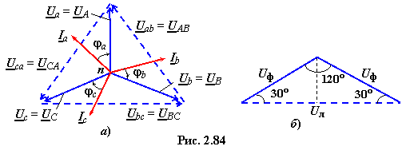
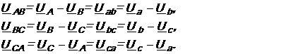
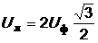
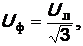
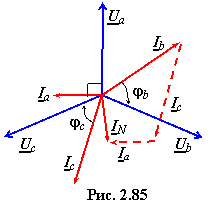
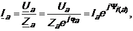
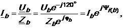
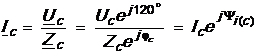
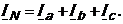

в четырёхпроводной системе при несимметричной нагрузке
Выведем соотношения между линейными и фазными напряжениями для соединения приёмника и генератора по схеме Y−Y (четырёхпроводная схема).

Согласно 2ЗК имеем (см. рис. 2.82 и рис. 2.84а)
 (2.147)
Если рассмотреть один из треугольников (рис. 2.84б), то легко вывести соотношение между линейным и фазным напряжениями, а именно:
 ,  (2.148)
т.е. фазное напряжение в раз меньше линейного и отстаёт
от него по фазе на угол 30° (точнее, вектор напряжения Ua отстаёт по фазе от вектора Uab,
вектор Ub от вектора Ubc, а вектор Uc от вектора Uca, см. рис. 2.84а).
 В четырёхпроводной системе при несимметричной нагрузке, в которой комплексные сопротивления фаз Za ≠ Zb ≠ Zc (например, Za = − jXa, Zb = Rb − jXb и Zc = Rc − jXc), фазные напряжения приёмника
равны соответствующим фазным напряжениям генератора, т.е.
а фазные токи различны и равны:
  .
Ток в нейтральном проводе (рис. 2.85)
 (2.149)